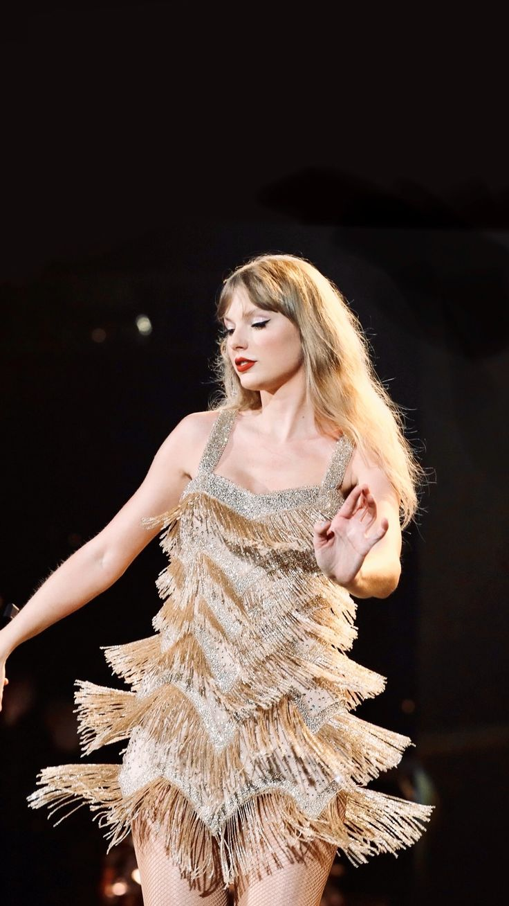
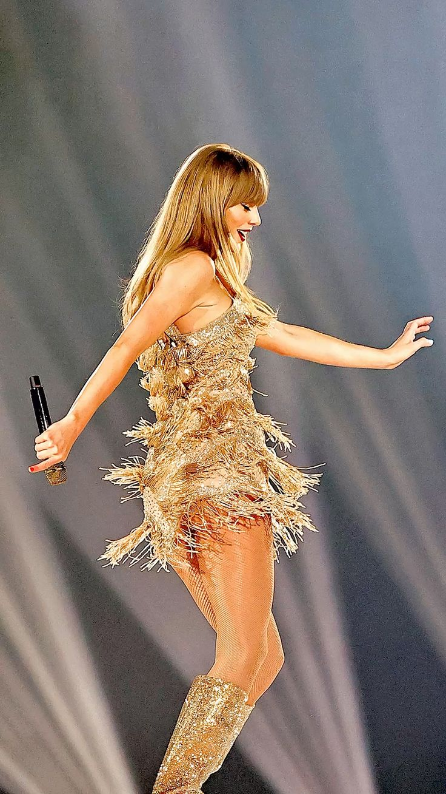
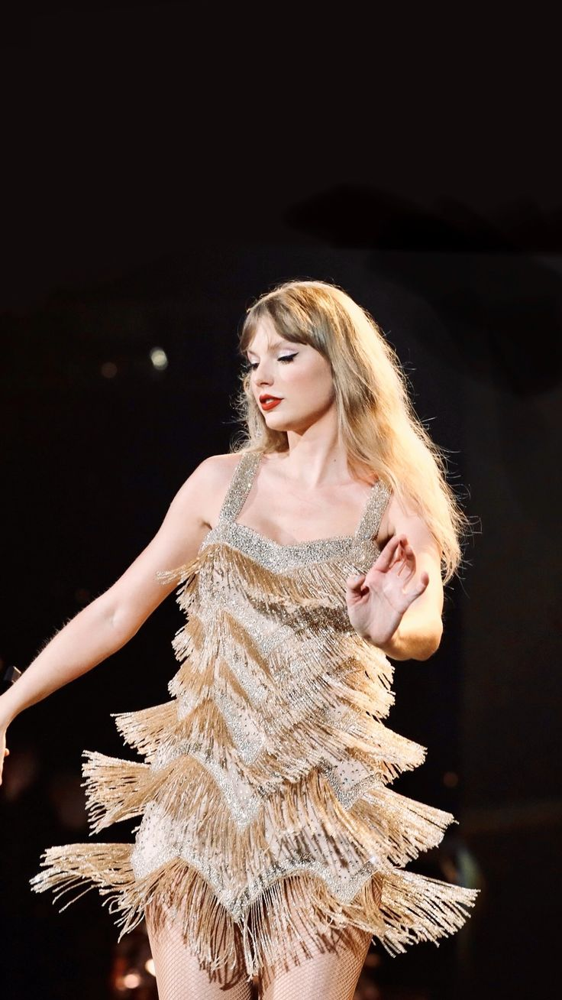
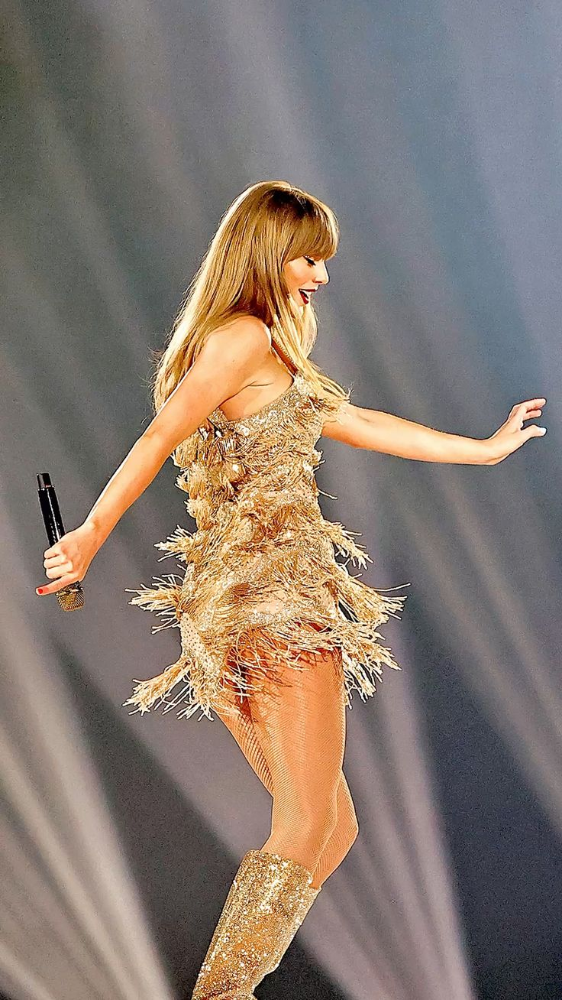
 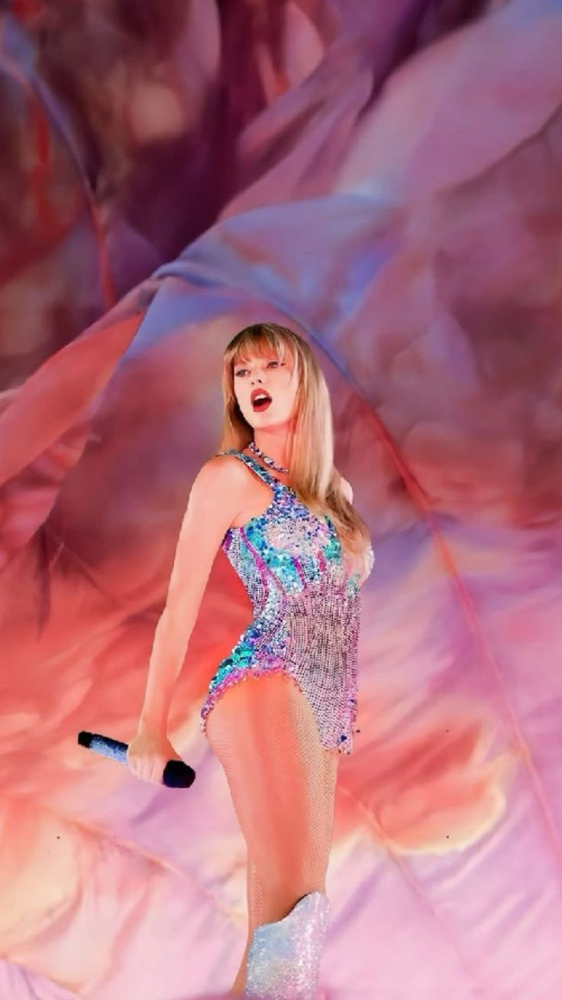
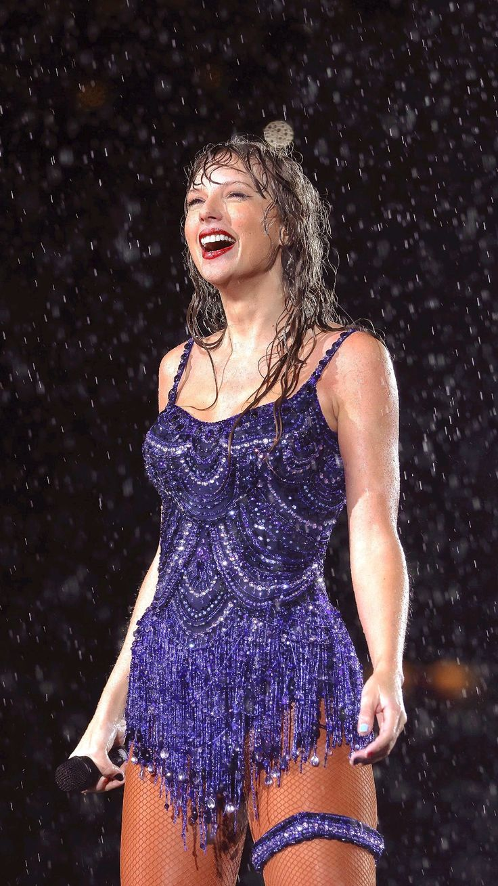
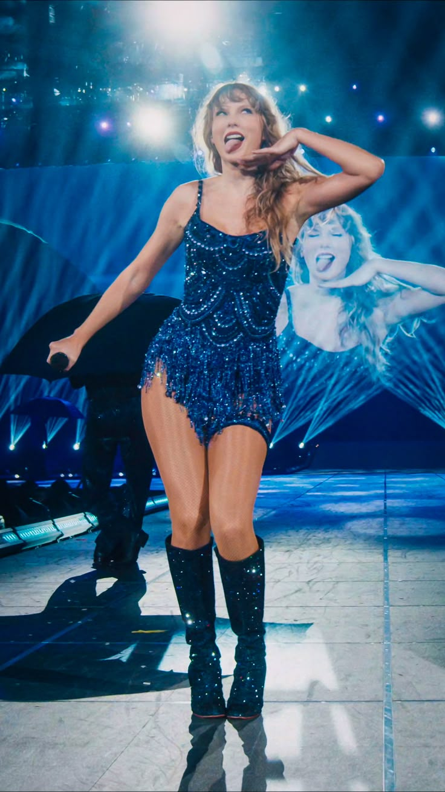
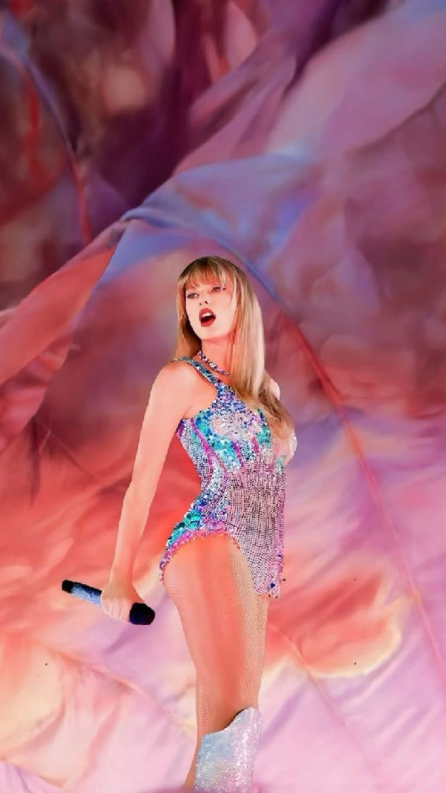
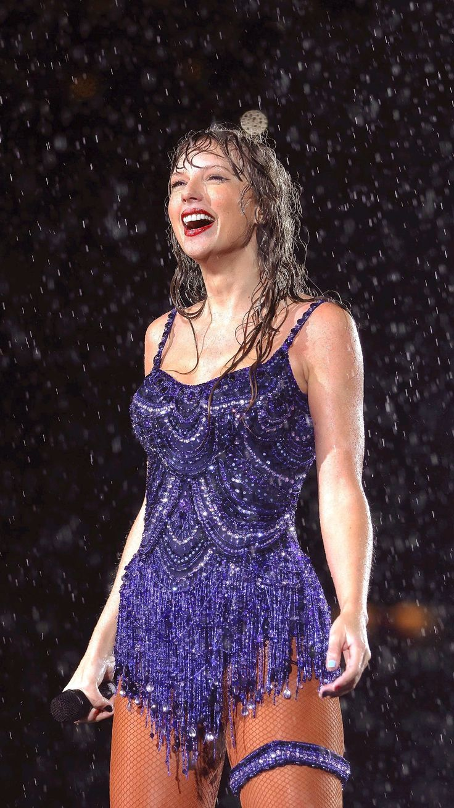
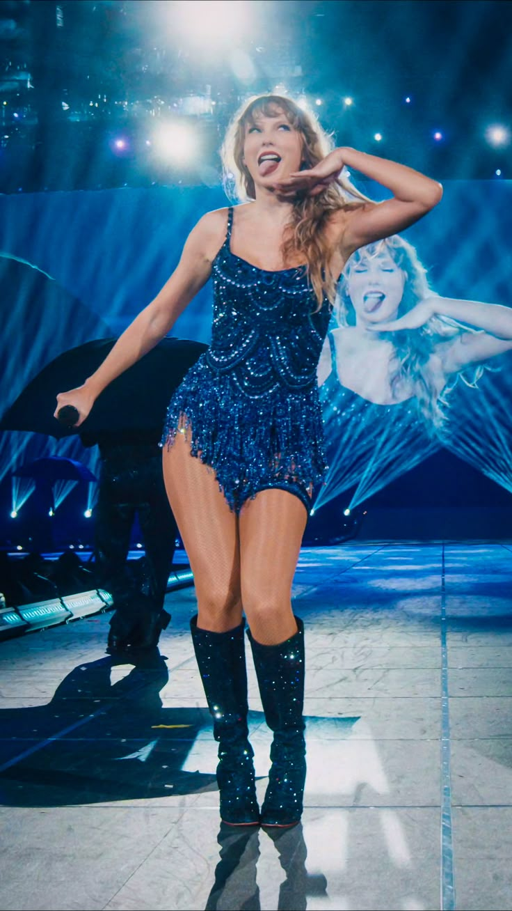
 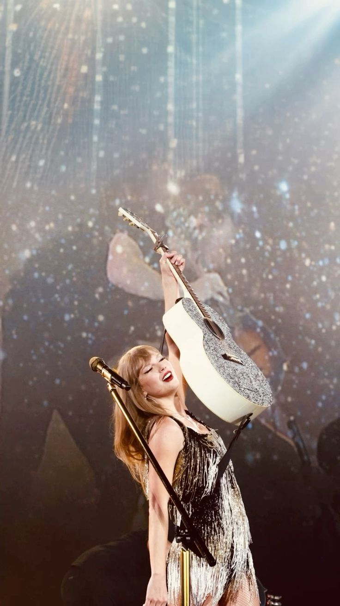
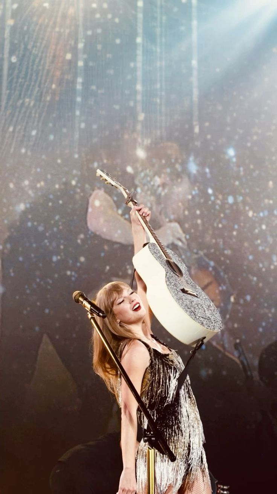
Biografia
Taylor Alison Swift é uma cantora, compositora e produtora musical americana, nascida em 13 de dezembro de 1989, em Reading, Pensilvânia. Ela ganhou interesse pela música country ainda na infância, mudou-se para Nashville com a família aos 14 anos para seguir a carreira e lançou seu álbum de estreia, Taylor Swift, em 2006. A partir daí, ela alcançou sucesso internacional, evoluindo do country para o pop e batendo recordes de vendas e turnês, como a icônica The Eras Tour.
Top 10 Músicas
- Love Story
- Shake It Off
- You Belong With Me
- Blank Space
- All Too Well
- Style
- Cardigan
- Wildest Dreams
- Delicate
- Willow